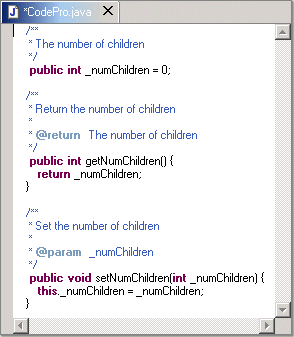
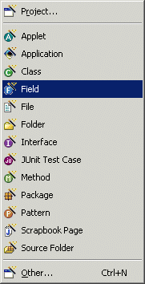
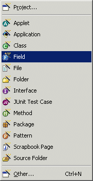
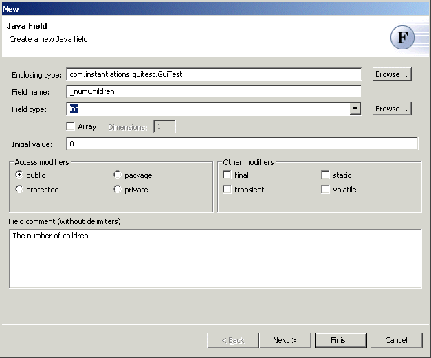
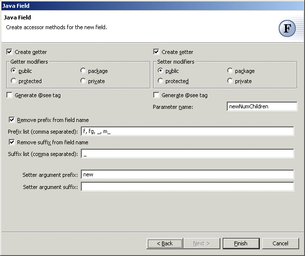

Java Field Wizard
The Java Field Wizard allows you to add a field (with optional accessors) to a type. The field will be added to the primary type in the currently active compilation unit.

New fields can be created via the standard New wizard by selecting the "Java" category, or via the popup "New" menu or the icon on the main toolbar.
 

The Java Field Wizard contains the following steps:
- Define Field -- specify all of the details about the field to be created.
- Create Field Accessors -- specify which, if any, accessors should be created for the field once it has been created.
Define Field
This page of the Java Field Wizard allows you to specify all of the details about the field to be created.

Enclosing Type
The enclosing type field allows you to specify the type to be extended. You must supply a fully qualified type name. If a type is currently being edited, this field will be pre-populated with the name of that type. You can also click on the button labeled "Browse..." to open a Select Type Dialog from which you can select any object type.

Field name
The field name field allows you to enter the name of the field to be created. You must supply a name that is a valid Java identifier.
Field type
The field type field allows you to specify the type of the field. The type can be any of the primitive types or any object type.
You can enter the name of the type directly, or you can select the type. All of the primitive types are available on the drop-down list. You can also click on the button labeled "Browse..." to open a Select Type Dialog from which you can select any object type.
To enter a type that is an array type, select the check box labeled "Array". This will cause the type entered in the field type field to be the base type for the array type. You can specify the number of dimensions in the array by entering a positive integer into the field labeled "Dimensions".
Initial value
The initial value field can be used to enter the expression that will be used to initialize the field. If you do not want the field to be initialized, simply leave this field blank.
Access Modifiers
The access modifiers group allows you to specify the visibility of the field. You must choose one of the four possible modifiers ("none" implies package visibility).
Other Modifiers
The other modifiers group allows you to specify any additional modifiers for the field.
Comment
The comment field allows you to enter a descriptive comment for the field. This comment will be included as a Javadoc comment when the field is created. It should not include the Javadoc comment delimiters. The comment will automatically be formatted and surrounded by comment delimiters for you.
Create Field Accessors
This page of the Java Field Wizard allows you to specify which, if any, accessors should be created for the field once it has been created..

Create getter
The create getter check box allows you to control whether a getter method will be created for the field. If this check box is selected, the controls within the Getter group box can be used to select the visibility of the method. You can also specify whether @see tags should be generated.
The name of the getter method is computed by taking the name of the field, after it has been processed as described below, replacing the first character by its uppercase equivalent, and prefixing it with the word "get".
Create setter
The create setter check box allows you to control whether a setter method will be created for the field. If this check box is selected, the controls within the Setter group box can be used to select the visibility of the method. You can also specify whether @see tags should be generated and what the parameter name should be.
The name of the setter method is computed by taking the name of the field, after it has been processed as described below, replacing the first character by its uppercase equivalent, and prefixing it with the word "set".
Parameter name
The name of the parameter is initially computed just like the name of the setter method, except without capitalizing the first letter and adding the prefix of "set". The parameter name field allows you to override this default name.
Remove prefix from field names
The remove prefix from field names check box allows you to control how the name of the method will be derived from the name of the field. If this check box is selected, the longest matching prefix in the list below will be removed from the field name before it is used to build the method names. If this check box is not selected, none of the leading characters will be removed.
Prefix list
This field contains a comma-separated list of the prefixes that should be looked for and removed.
Remove suffix from field names
The remove suffix from field names check box also allows you to control how the name of the method will be derived from the name of the field. If this check box is selected, the longest matching suffix in the list below will be removed from the field name before it is used to build the method names. If this check box is not selected, none of the leading characters will be removed.
Suffix list
This field contains a comma-separated list of the suffixes that should be looked for and removed.
Setter argument prefix
This field contains an optional prefix that will be added to create the name of the setter argument.
Setter argument suffix
This field contains an optional suffix that will be added to create the name of the setter argument.